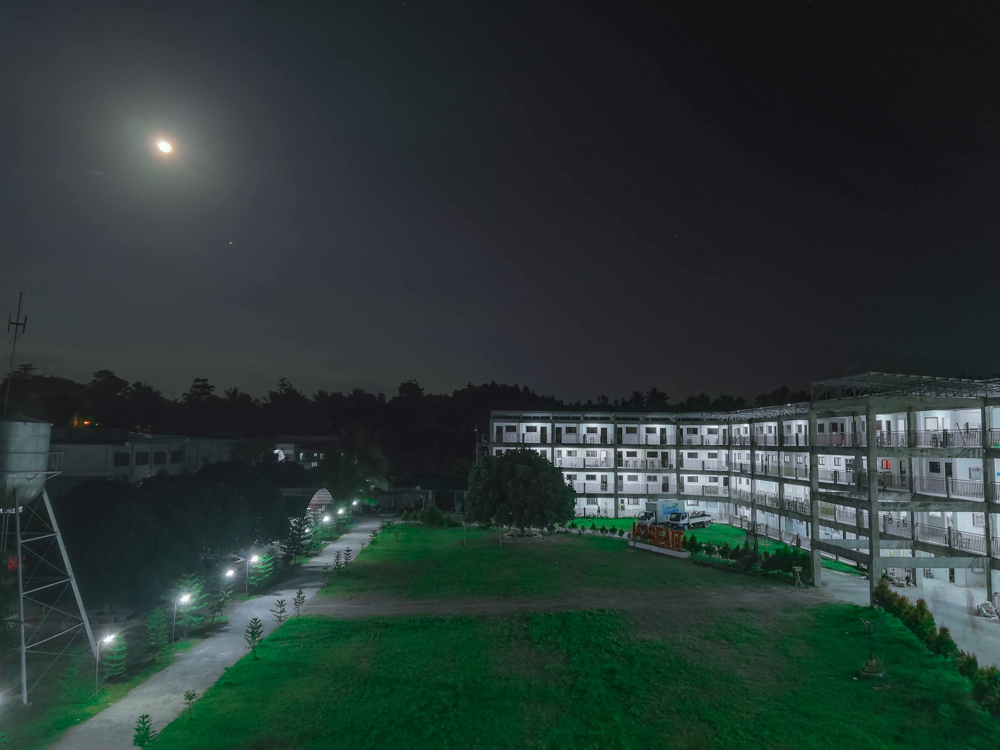
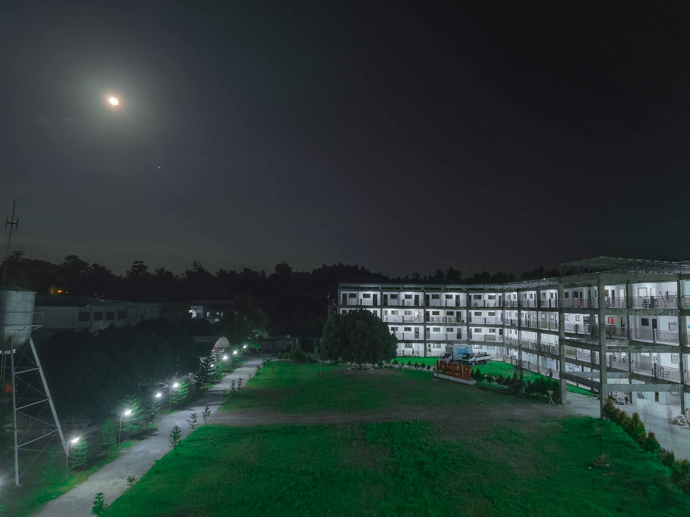

WELCOME TO SEAIT
Committed to the total development of students
About us
The South East Asian Institute of Technology, Inc. offer free education to all programs in college. The school is supported with different government sectors and NGOs
Our history
South East Asian Institute of Technology, Inc. with its famous acronym SEAIT was formed like a drama with a glaring spotlights in an amphitheater. The backdrops were up, the playwrights were ready, the actors and actresses well-dressed, the orchestra were playing the timeless music and the curtain started to open………slowly.
February 2006 marked the foundation of the dream school, not with the breaking ground but with the first cracking of the door in literal sense, the school occupied a rented space at Shell Gasoline station near Valera’s place still in Tupi which catered minimal population of students who too up vocational courses. The Tamayos reminisced their struggles upon putting the desired institution. One of these struggles was the conduciveness of learning employed in the pilot institution. What learning is to be expected in a small rectangular space? This question begged the public interest yet the family never surrender neither tried to give up their guiding philosophy- to give quality over quantity education. It was Mr. Reynaldo S Tamayo and is wife Mrs. Rochelle P. Tamayo who served as the pioneering administrators of the school. Both were driven by passion and love for education and humanity and magnanimity were their second skin.
At first, SEAIT offered technical and vocational courses like Computer Programming NC IV and Computer Hardware Servicing NC II. The breakthrough of History started on the second phase of the institution. SEAIT was granted by the Technical Education Skills Development Authority (TESDA) to offer Hotel and Restaurant Management. The next year, the Commission on Higher Education (CHED) permitted the school to offer the first four-years science course-Bachelor of Science in Information Technology (BSIT) which successfully persuaded the target market.
The institution followed a great momentum when the CHED granted a laddered Bachelor of Science in Hotel and Restaurant Management and Bachelor of Science in Business Administration major in Marketing Management. Two years then, the same commission permitted the school to open and operate program for education courses. Bachelor of Elementary Education and Bachelor of Secondary Education major in English and Mathematics. Later, Bachelor of Science in Criminology, Bachelor of Science in Agriculture and Bachelor of Science in Civil Engineering were successfully established.
The vision of the school becomes more visible as it extended from technical and vocational education into a wider field. It continues to prosper from the next consecutive years and eventually gained the government recognition from the Department of Education to operatek-12 program last June 2016. It includes kindergarten, junior and senior high school whose population smoothly grow after a year.
This year, the school widens its field by offering the following new degree programs;
1. BS Tourism Management(BSTM)
2. BS Early Childhood Education(BECE)
3. BS Accounting Information System(BSAIS)
4. BS Public Administration(BSPA)
5. BS Fisheries(BSF)
SEAIT, from the labor of the Tamayo’s family, slowly yields into an immense kinship of administrators, faculty members, students and the community who desires to educate and be educated to make a tangible contribution to the community. This bond had become the foundation of the school in seeking more ways and means on how to make the school would be able to become stronger and substantial.
and History continues…….
 
